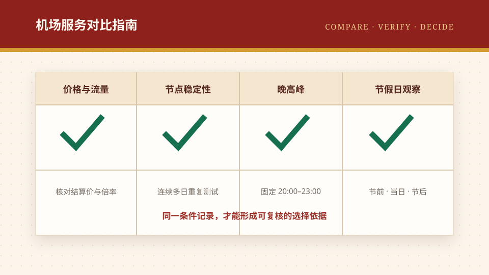

日常节点稳定
在同一宽带、同一设备和相同节点地区下，连续 7 天记录可用率、延迟、丢包与断连次数。
围绕价格、条款、售后和使用场景，提供可复核的横向比较框架。
名单顺序与“机场推荐”保持一致。价格与套餐用于初步筛选；节点稳定性、晚高峰和节假日表现需要在相同网络条件下持续测试。
等级说明：前 6 名统一显示“优秀”，第 7–16 名显示“较好”，颜色分层用于快速识别推荐梯度；它不是覆盖全部地区的统一测速结论，实际表现仍应在用户自己的网络环境中复测。
| 顺序 | 服务 | 公开入门价 / 流量 | 套餐结构 | 优惠信息 | 价格证据 | 节点稳定性 | 晚高峰 | 节假日 |
|---|---|---|---|---|---|---|---|---|
| 1 | 闪电鼠性价比之王套餐跨度清晰，适合从轻量浏览到多设备影音需求的用户。 | ¥22 · 120GB/月 | 年付 / 月付 | sd88优惠范围以结算页为准 | 套餐截图已记录 | 优秀需多日、多时段验证 | 优秀20:00–23:00 复测 | 优秀节前至节后复测 |
| 2 | 大佬云套餐灵活王同时提供月付、年付和一次性套餐，适合希望灵活选择周期的用户。 | ¥23 · 130GB/月 | 年付 / 月付 / 一次性 | dly88优惠范围以结算页为准 | 套餐截图已记录 | 优秀需多日、多时段验证 | 优秀20:00–23:00 复测 | 优秀节前至节后复测 |
| 3 | 环球梯综合体验王覆盖年付、月付与一次性流量包，适合学生、个人和多人多设备场景。 | ¥22 · 120GB/月 | 年付 / 月付 / 一次性 | hq66优惠范围以结算页为准 | 套餐截图已记录 | 优秀需多日、多时段验证 | 优秀20:00–23:00 复测 | 优秀节前至节后复测 |
| 4 | 榴莲云月付流量档位丰富，适合从日常浏览到高流量影音的不同需求。 | ¥24 · 140GB/月 | 年付 / 月付 | ll88优惠范围以结算页为准 | 套餐截图已记录 | 优秀需多日、多时段验证 | 优秀20:00–23:00 复测 | 优秀节前至节后复测 |
| 5 | 云界线既有常规月付套餐，也有一次性流量包，适合希望控制订阅周期的用户。 | ¥22 · 150GB/月 | 年付 / 月付 / 一次性 | yjx888优惠范围以结算页为准 | 套餐截图已记录 | 优秀需多日、多时段验证 | 优秀20:00–23:00 复测 | 优秀节前至节后复测 |
| 6 | 神行加速月付方案从基础到高流量覆盖，适合重视套餐梯度和多设备使用的用户。 | ¥23 · 120GB/月 | 月付 / 年付 | sx0077优惠范围以结算页为准 | 套餐截图已记录 | 优秀需多日、多时段验证 | 优秀20:00–23:00 复测 | 优秀节前至节后复测 |
| 7 | 青云梯公开资料多次提到低门槛年付小包，适合轻量使用者先核对结算页与流量规则。 | ¥23 · 流量待核验 | 年付 / 月付 | 未确认通用码 | 公开摘要已整理 | 较好需多日、多时段验证 | 较好20:00–23:00 复测 | 较好节前至节后复测 |
| 8 | 泡芙云公开结果提到月付、年付与专线方案，但价格摘要不足，适合先查看注册页当前套餐再做比较。 | 待核验 | 套餐待核验 | 未确认通用码 | 价格待核验 | 较好需多日、多时段验证 | 较好20:00–23:00 复测 | 较好节前至节后复测 |
| 9 | Flybit月付和不限时流量包并存，适合希望低门槛试用或按需购买流量的用户。 | ¥15 · 128GB/月 | 月付 / 一次性 | flybit公开资料称 9 折码 | 公开摘要已整理 | 较好需多日、多时段验证 | 较好20:00–23:00 复测 | 较好节前至节后复测 |
| 10 | 网际快车以不限时流量包和短期日享包为主要公开卖点，适合低频或临时需求用户比较。 | ¥6.80 · 20GB 总量 | 一次性 / 30 天 | 未确认通用码 | 公开摘要已整理 | 较好需多日、多时段验证 | 较好20:00–23:00 复测 | 较好节前至节后复测 |
| 11 | 二猫云公开资料显示其采用月付分档并提供年付轻量方案，适合先从小档位核验体验。 | ¥20 · 100GB/月 | 月付 / 年付 | TIZIZHINAN第三方页面标注 8 折 | 公开摘要已整理 | 较好需多日、多时段验证 | 较好20:00–23:00 复测 | 较好节前至节后复测 |
| 12 | 边缘节点公开资料显示同时提供月付、年付和不限时流量包，适合希望比较多种付费周期的用户。 | ¥15 · 50GB/月 | 月付 / 年付 | xk808公开资料称 8 折码 | 公开摘要已整理 | 较好需多日、多时段验证 | 较好20:00–23:00 复测 | 较好节前至节后复测 |
| 13 | 大哥云公开资料多次出现 19.9 元入门月付方案，适合先用小额月付验证实际体验。 | ¥19.90 · 100GB/月 | 月付 | VPNOOL.COM第三方页面标注 85 折 | 公开摘要已整理 | 较好需多日、多时段验证 | 较好20:00–23:00 复测 | 较好节前至节后复测 |
| 14 | 光速云公开资料显示套餐覆盖轻量到重度，并包含年付与一次性方案，适合比较多档流量需求。 | ¥8.25 · 59GB/月 | 年付折算 / 月付 | 未确认通用码 | 公开摘要已整理 | 较好需多日、多时段验证 | 较好20:00–23:00 复测 | 较好节前至节后复测 |
| 15 | 龙猫云公开资料显示月付门槛较低，并提供按付款周期区分的折扣码，适合长期方案对比。 | ¥15 · 100GB/月 | 月付 | mid85月/季/半年付 85 折 | 公开摘要已整理 | 较好需多日、多时段验证 | 较好20:00–23:00 复测 | 较好节前至节后复测 |
| 16 | 星岛梦公开资料显示月付、年付、一次性与定制方案并存，适合需要多种周期选择的用户。 | ¥16 · 100GB/月 | 月付 | 未确认通用码 | 公开摘要已整理 | 较好需多日、多时段验证 | 较好20:00–23:00 复测 | 较好节前至节后复测 |
在同一宽带、同一设备和相同节点地区下，连续 7 天记录可用率、延迟、丢包与断连次数。
重点观察每日 20:00–23:00，同一测试任务至少重复 3 次，避免单次结果放大偶然波动。
分别记录节前、假期当日和节后表现，同时关注公告、工单响应和临时限速说明。
稳定性不仅是速度，还包括故障说明是否及时、备用入口是否可用以及恢复时间是否透明。

按照机场推荐榜顺序，对比 16 项候选服务的公开价格、套餐结构、优惠信息与证据状态，并说明节点稳定性、晚高峰和节假日表现应如何持续测试。